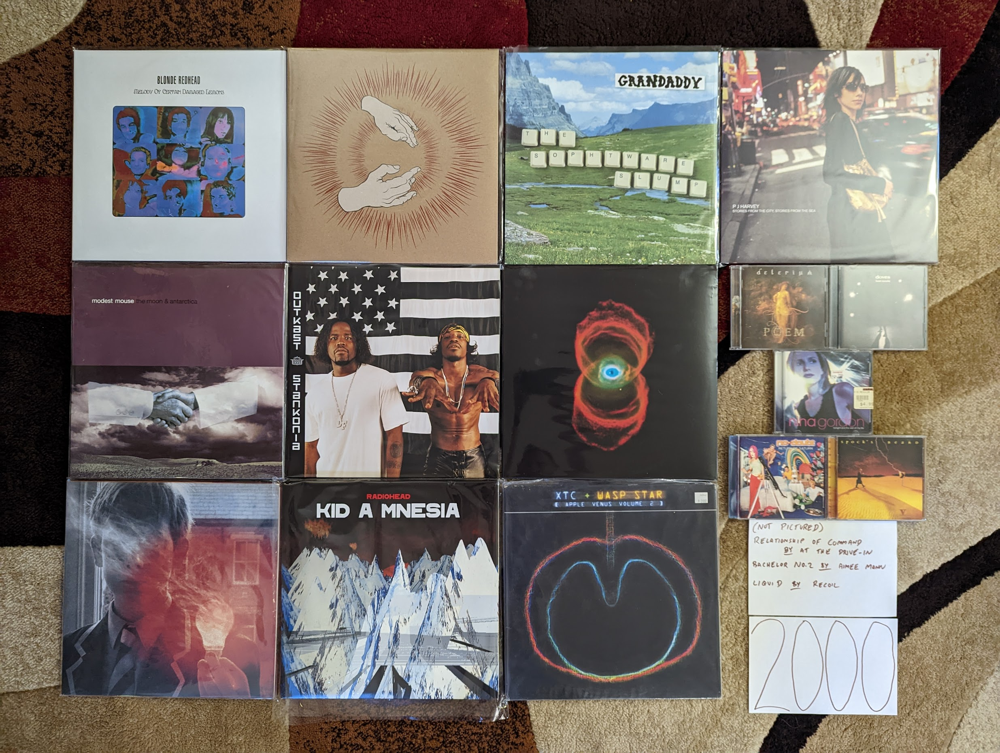

2000¶
The decades generally don’t break down into convenient, thematic chunks and this is such a case. Most of what was popular, and certainly what I like from 2000 was the work of artists that rose to prominence in the 90s. The next year, millennial indie would break, and dominate the popular consciousness and my list of favorites. What we have below is a grab bag of acts with roots in early 90s alternative, late 90s indie, and other trends of the past (With one new band that points forward to what was to come).
This year I was busy, having relocated to State College, PA to continue my education. I wasn’t paying as much attention to new music and it shows, with only five of the albums something I heard in the year of release. The music I was listening to at the time was either from decades gone by, or things from the current day that I really don’t care for anymore.
{kind=link}
Melody of Certain Damaged Lemons by Blonde Redhead - The earlier, noisier records have some appeal to me, but this album is where I really get on-board. The creepy, dreamy electronic sound with ethereal vocals is the formula that worked best for me. “This Is Not” is the perfect halfway point of their experimental tendencies and pop song skills. [Memory: This album really reminds me of my move to Rochester, NY as I was very into this around 2008/09.]
Poem by Delerium - This was a turn to a more mainstream sensibility, designed to capitalize on the newfound success of the prior two records. Electronic music was becoming a dominant force in the clubs and world music beats were still very much in vogue. There is an increased focus on collaborations with guest vocalists, and most of them work out very well. A particular highlight is “Innocente” featuring Leigh Nash of Sixpence and None the Richer. There are still some great atmospheric instrumental tracks to complement the vocal collabs. [Memory: The following year I would purchase my first MP3 player specifically to use on my runs. For some reason, this was one of the records I would put on my running playlists.]
Lost Souls by Doves - I prefer the following two records which were more in the UK indie mold, but this is a very good record as well. A very post-rock influenced effort, the songs are long and moody. Every now and then we get one of those little pop gems that would define their later work. [Memory: I heard this some years after their other releases. For some reason it wasn’t easy to find in the US until the late 2000s.]
Raise Your Skinny Fists Like Antennas to Heaven by Godspeed You! Black Emperor - [2000 FAVORITE] - Their finest work, and probably the best thing to come out of the much maligned genre of post-rock. This is heavy, gorgeous music that never stops being interesting. That somewhat not quite right, but completely beautiful interval played by the brass in the first moments of “Storm” gets me every time. I’ll never get tired of hearing the story of Murray Ostril describing his childhood visits to Coney Island on “Sleep”. One of the greatest albums of all time, and one the band would never quite match.
Tonight and the Rest of My Life by Nina Gordon - I’m not sure why we only got one really good record from this artist, because it is really, really good. Gordon has an great voice, and a rock sensibility that separates this music from the other woman singer songwriters in this area. I really wish we had gotten way more of this. [Memory: This makes me think about how different music discovery was back in the day. I heard the title track off of this on VH1 around the time of release. It really peaked my interest, but not enough to run out and spend my hard earned cash on the CD. It wasn’t until I saw a used copy at a Cash Converters two years later that I heard the whole and album and realized how much I like it. Today I would stream it on Spotify immediately.]
The Sophtware Slump by Grandaddy - Not a happy record. A haunting, psychedelic cycle of songs that feels like the overture to the pervasive negativity and malaise of the G.W. era. It manages to find some real beauty in the melancholy, but I have to be in the right mood for this. [Memory: 2008 was a difficult year in my life, and I remember connecting with this dreary record. I listened to it repeatedly working in the lab at my job at the time. I was semi-permanently living out of hotels in Rochester, and working all the time. This music made total sense in that context.]
Stories from the City, Stories from the Sea by PJ Harvey - For many years, I tended to dismiss this as a sellout for mainstream accessability. This is still Polly at her most mainstream, but it retains her best qualities as well. It is also the last record will will ever probably get with her trademark belting/growling vocal style. I now realize just because she threw in some stunning pop rock singles like “You Said Something” it doesn’t make this any less of a PJ Harvey record. [Memory: Showing how resistant I was to this record, it ended up being the very last of her records I bought on CD (Even after the very mediocre Uh Huh, Her).]
The Moon and Antarctica by Modest Mouse - In retrospect it is becoming clear that this is by far their best work. Wonderfully eccentric songwriting, and creative arrangements, they are firing on all cylinders. It never drifts into the sameness of their early records, and avoids the bland pop that would creep into the later records. One of the finest early indie records. [Memory: I bought the CD re-issue of this as a doorbuster sale at Best Buy black friday in 2004. What a different time, in so many ways.]
Bachelor No. 2: The Last Remains of the Dodo by Aimee Mann - Possibly the finest record in the “music you will hear at Starbucks genre”. Smartly written and produced folk leaning alt-rock. I love how her songs take unexpected turns into epic territory during the bridge or second chorus, and sometimes both like “How Am I Different”.
Return of Saturn by No Doubt - The intersection of the 90s ska sound that the band was famous for, and the early 2000s pop sound that frontwoman Gwen Stefani would help create. I like this way more than anything else by the band or the singer, and it is perhaps the last great 90s alt-rock record. [Memory: I had been resistant to this band until this record came out. Somehow it was the pop sweetness of “Simple Kind of Life” that would get me onboard.]
Stankonia by Outkast - These guys were always a breath of fresh air. In the 90s their joyful funky hip hop was the antidote we needed to soulless gangsta rappers, and the conscious hip hop here is just what was needed in the face of the bling era. I’m far from an expert in the genre, but this is my top rap record of all time. [Memory: I started watching MTV in 2000 after hearing the hip hop hits of the day at college parties at Penn State. That is where I heard these guys, and the songs “Mrs. Jackson” and the absolutely stellar “B.O.B” lead me to this record.]
Binaural by Pearl Jam - This is definitely the record where these guys started to sound older. The ballads were creeping in, and they were generally pretty great (e.g. “Light Years”). That said, after this point they would start to feel a bit self derivative. This in some ways is the last time we would get rockers like “Rival” that didn’t feel like a re-projection of past glory. [Memory: It took me a while to become a full-blown Pearl Jam fan, and I was only really fully on board when this record came out. At the time, this was probably my favorite album of the year.]
Lightbulb Sun by Porcupine Tree - It seemed like this was the year that all the 90s acts were becoming softer and more introspective. That included the kings of 90s prog. A very somber but beautiful record, and a big contrast of the prog metal that was coming next. [Memory: I would have loved to hear this record when it came out, but thanks to the slow distribution of their music in the states, I didn’t hear it until ordering UK imports on Amazon became a thing around 2006.]
Kid A by Radiohead - I like the actual songs here more than the meandering instrumentals, which haven’t aged very well. This layed the blueprint for a decade of layered electronic indie. [Memory: At the time I didn’t like this very much in comparison to the more rock forward sound of The Bends, but I have grown to appreciate it over time.]
Liquid by Recoil - A very strange electronic concept record. It doesn’t feel as sinister as it did at the time, and is admittedly a little comically over-dark in retrospect. Their use of slam poets for lyrics also makes this sound incredibly dated. There still are some interesting songs here like “Supreme”, “Jezebel”, and “Chrome”, even if the whole thing doesn’t work anymore. [Memory: A friend of mine at work loved this record and played it constantly, but I kinda hated it. After many listens I finally started to warm up to it. I never liked it enough to buy my own copy, and I only had the CD-R I burned from my friend for over a decade. I’ll still put it on from time to time, and I think how dated the whole thing is makes me nostalgic for a different time.]
V by Spock’s Beard - A very literal packaging of classic prog rock for the 21st century. I can almost picture these guys sitting down to make “Great Nothing” and saying “OK boys, its time to make our ‘Supper’s Ready’”. The whole thing has a kind of squeaky clean, Christian rock vibe to it that is both cringey and effective somehow. [Memory: I came across this during my deep dive exploration of prog rock circa 2003. This was by far the highest rated neo-prog album on RateYourMusic, and it deserves the good reviews.]
Wasp Star (Apple Venus Volume 2) by XTC - Few great bands have closed out their career this well. It is a solid set of straight-ahead songs that shows off how easy it was for these guys to make pop perfection. There is no bombast or orchestration here, and shows off the core of what made this band great for over two decades. [Memory: When I first got into XTC in 2004, this was the new record. It wasn’t yet clear that it would be the last one. I always hoped we would get more.]